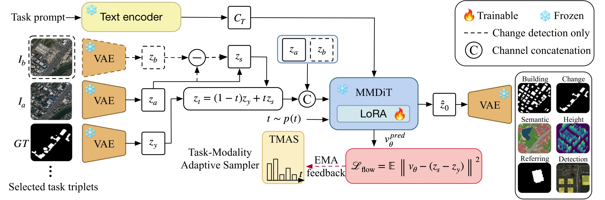
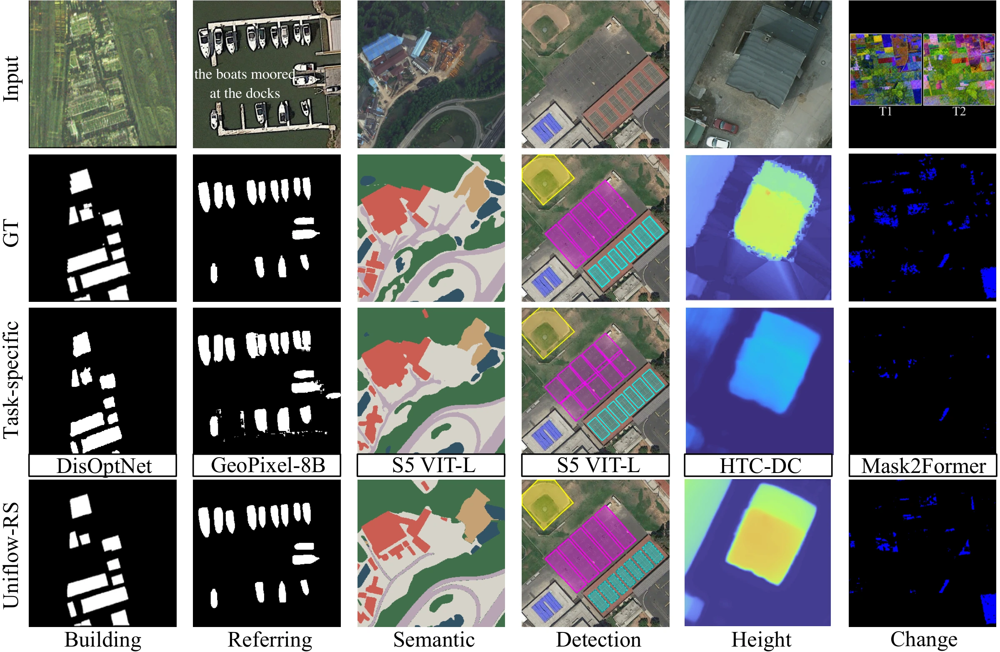
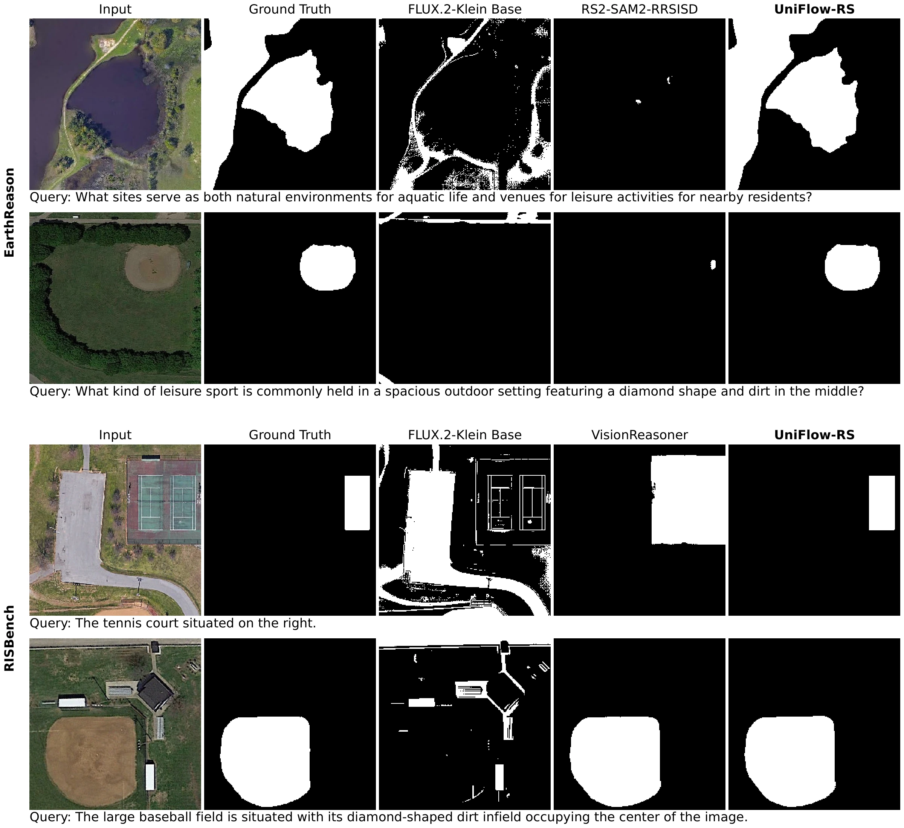
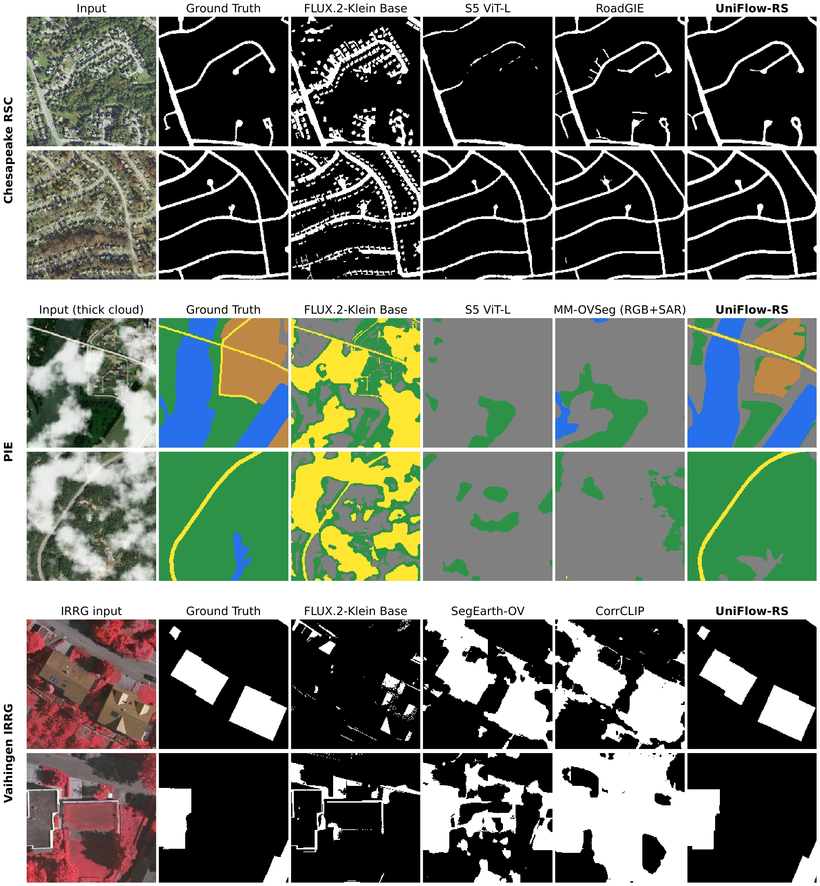
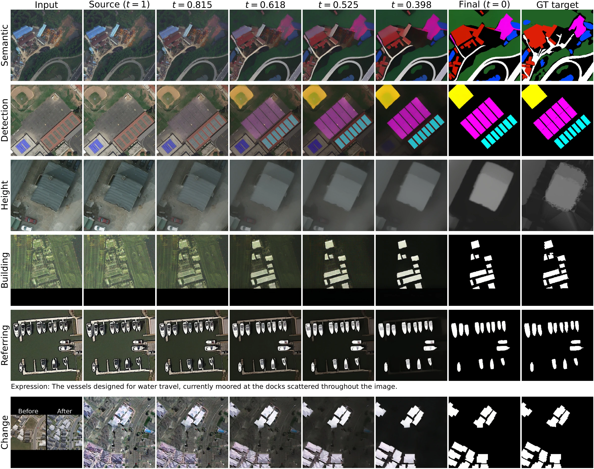

Abstract
Remote-sensing foundation models increasingly unify representations across sensing modalities and downstream tasks, yet their prediction mechanisms remain largely task-specific. Separate decoders, heads, and objectives leave prediction fragmented across tasks. Can heterogeneous remote-sensing tasks share the prediction process?
UniFlow-RS answers this question with a single latent flow-matching predictor shared across tasks. Heterogeneous outputs are encoded as structured visual targets in a common latent space. Task-dependent conditioning accommodates different input configurations, while a shared Flow Matching objective removes the need for learned task-specific prediction heads and losses. Task–Modality Adaptive Timestep Sampling (TMAS) adapts training timestep allocation to the online learning state of each task–modality group.
A single model handles six tasks across thirteen datasets and remains competitive with task-specific methods. The same checkpoint also transfers across unseen datasets, task settings, occlusion conditions, and near-infrared false-color imagery, without target-specific adaptation.
A shared prediction process
Unify the output space, not just the backbone.

Structured visual targets
Binary masks, class-coded maps, continuous height fields, and rotated-object targets share the same latent prediction space.
Adaptive joint learning
TMAS tracks difficulty and learning activity across task–modality groups to adapt where training samples the flow trajectory.
Deterministic recovery
Task-dependent recovery converts the generated outputs to masks, semantic labels, heights, or rotated instances.
Six tasks, one model
Qualitative results across optical and SAR imagery.


Joint adaptation across task families
| Setting | Building IoU | Change IoU | Semantic mIoU | Height δ₁ | Referring gIoU | Detection mAP50 | UTS ↑ |
|---|---|---|---|---|---|---|---|
| Single-task | 75.63 | 73.91 | 49.26 | 72.13 | 72.54 | 61.39 | 67.48 |
| Joint | 76.38 | 74.75 | 51.12 | 72.06 | 73.61 | 62.80 | 68.45 |
| Joint + TMAS | 76.93 | 74.63 | 52.57 | 73.31 | 73.93 | 64.75 | 69.35 |
Single-task uses one LoRA per task; joint variants share one LoRA. UTS averages the eligible native metrics within each task and then across tasks. See the paper for the dataset-level protocols.
Beyond the training setting
The same checkpoint, without target-specific adaptation.




From image texture to structured output
A look inside the transport trajectory.


BibTeX
@misc{he2026uniflowrs,
title={UniFlow-RS: Unified Generative Prediction for
Heterogeneous Remote-Sensing Tasks},
author={He, Jianlong and Liao, Liang and Xiao, Jing and
Chen, Chaofeng and Xia, Gui-Song},
year={2026},
url={https://elaxegan.github.io/uniflow-rs/}
}Preprint citation; an arXiv identifier will be added when available.